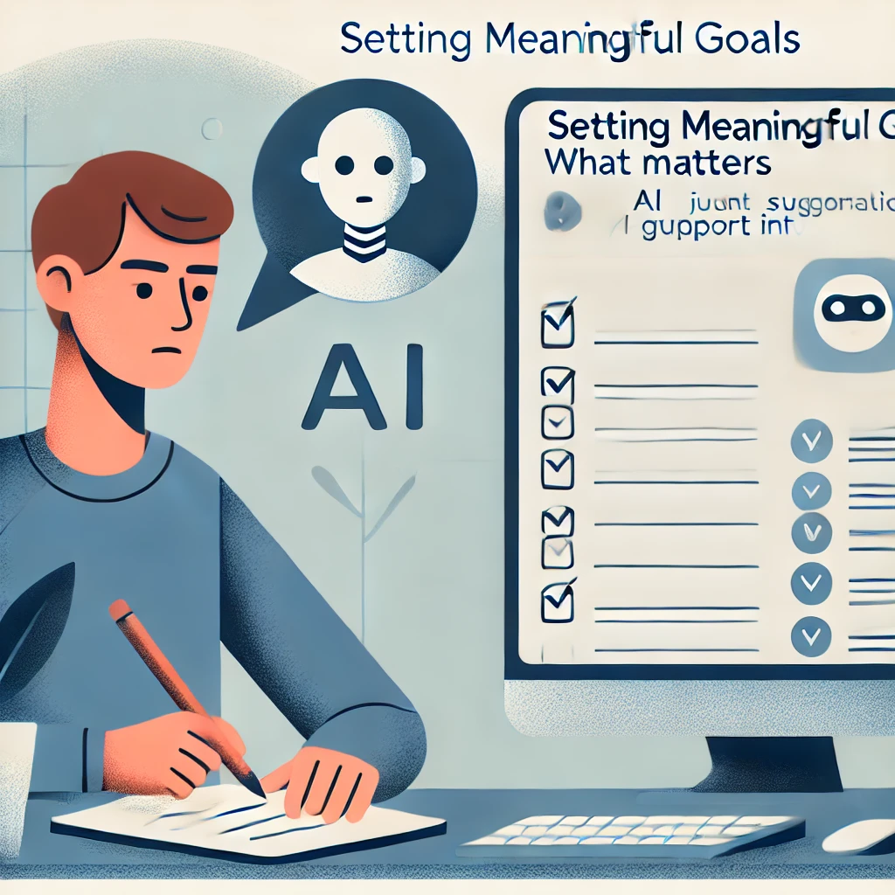
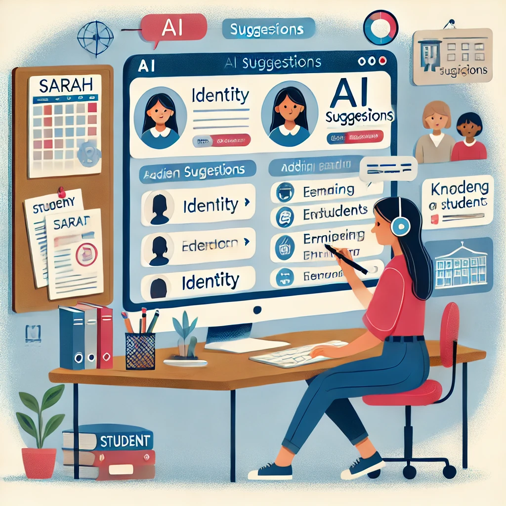
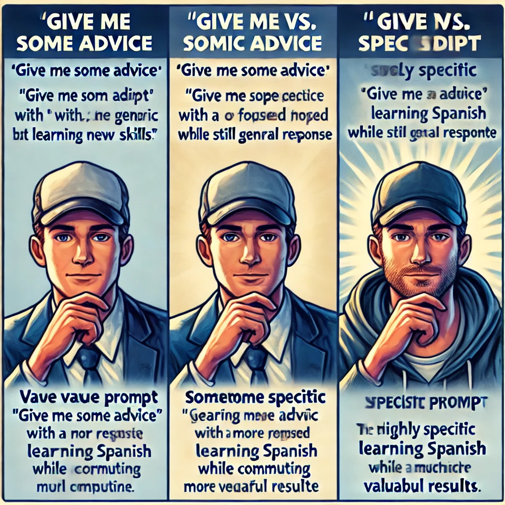

A Practical Guide to Using AI in Everyday Life
新しいテクノロジーを使う人を見て、それが簡単そうに見えるのに、自分でやってみると途方に暮れた経験はありませんか？あるいは、ChatGPTや他のAIツールについてニュースで耳にしても、それが複雑すぎたり技術的すぎたりして、まだ試していないのではないでしょうか？
あなたは一人ではありません。多くの人がこれらのテクノロジーに威圧感を感じたり、どこから始めればよいかわからなかったりします。良いニュースは、これらのツールを効果的に使うためにテクノロジーの専門家である必要はないということです。実際、必要なスキルは好奇心、判断力、そしてあなた自身が大切にしていることについての独自の視点など、あなたがすでに持っているものです。
この本が取り上げるのはまさにそのことです：あなたにとって重要なことを達成するために、人間としての知恵とAIツールをどう組み合わせるかをお伝えします。私たちはこのパートナーシップを実践的知性と呼んでいます——テクノロジーではなく、あなた自身がプロセスの中心となるフレームワークです。
本題に入る前に、次の質問に対するあなたの答えを書き留めてみてください：
これらの答えをお手元に置いておいてください。この章を進めていく中で、あなたの最初のAI体験をパーソナライズするのに役立ちます。
この先のページでは、AIツールについて考えるためのシンプルなフレームワークを確立し、（技術的な知識は不要で！）いかに簡単に使い始められるかを実証し、さらにあなたの方向性と判断力が価値ある結果を得るための重要な要素であることをお示しします。
これらの強力なツールを自信を持って効果的に活用していく旅を、最初のやり取りから始めましょう。
…人間とAIのパートナーシップ
まずは簡単なことから始めましょう。技術的なスキルは必要ありません—単に文章を入力する能力だけです。
こんにちは、ChatGPTは初めてです。あなたが私をどのように助けられるか、簡単な言葉で説明してくれますか？これだけです！あなたは最初のAI会話を経験しました。

AIが自己紹介し、その機能を説明することに注目してください。これは事前に録音されたメッセージではなく、AIがあなた専用に生成した回答です。これからの章では、これらの会話をあなた特有のニーズにますます役立てる方法を学びます。
技術的なバックグラウンドを持たない小規模ビジネスオーナーのマリアは、初めての経験をこう描写しています：
「正直、複雑なものを予想していました—特別なコマンドを学ぶ必要があるとか。でも、それはテキストメッセージのようなものでした。より良いメールニュースレターの書き方を尋ねたら、数秒以内に実際に使えるアイデアが得られました。専門用語も複雑な設定も必要ありませんでした。」
AIツールをキッチン家電のように考えてみましょう。スタンドミキサーは生地を混ぜる大変な作業をこなしますが、どのレシピを作るかを決めたり、ちょうど良い硬さになったかを知ったりはしません—それはあなたの仕事です。ミキサーは特定のタスクに非常に長けていますが、味覚を持ち、レシピを修正する創造性を持ち、誰かの食事制限に合わせて調理しているかどうかを知っているのはあなたです。
実践的知性とは、あなたの人間としての判断力とAIの能力とのこのパートナーシップのことです。あなたの知恵、創造性、目的とAIの情報処理能力やコンテンツ生成能力が組み合わさったときに生まれるものです。
問題を解決するために強力なツールを使った最後の経験を思い出してください。料理の準備時間を半分に減らしたフードプロセッサーや、見知らぬ街を案内してくれたマッピングソフトウェアかもしれません。ツールは非常に価値がありましたが、何を料理するか、どこに行くかを決めたのはあなたでした。それがAIとのあなたの関係と全く同じです—あなたはただボタンを押すだけではなく、指示を出すクリエイティブディレクターなのです。

AIを独自の心を持つ魔法のような存在と考えるのではなく、この単純な関係を考えてみましょう：
なぜこの関係がそれほど重要なのでしょうか？それを理解することで、これらのツールの日々の使い方が変わるからです。
あなたがディレクターであり、AIがあなたのアシスタントであることを認識すると、AIが生成するものを受動的に受け入れるのではなく、自然にプロセスを主導するようになります。これらのツールがあなたのために何ができるか（そして何ができないか）についてより明確な期待を持つようになります。AIが複製できない人間特有のスキルを強化することに集中します。そして恐らく最も重要なことに、あなたの仕事やアイデアの所有権を維持します。
これらのツールにアプローチするより力強い方法ではないでしょうか？
実際の例を通して、このパートナーシップがどのように機能するかを見てみましょう。
AIの経験がない中学校の理科教師のリサは、気候変動に関する授業を作りたいと考えていました。彼女はChatGPTに単に7年生向けの気候変動の授業を作成してと頼み、生成されたものを使うこともできましたが、それでは彼女が生徒について持つユニークな知識を無視することになります。

その代わりに、リサは人間としての判断力を適用しました。彼女は特定の生徒たち—彼らの知識レベル、興味関心、そして彼らが毎日目にする地域の環境問題について知っていました。彼女は過去の授業で彼らがどの概念に苦戦したかを理解していました。
AIが持ち得ないこの文脈を持って、リサはChatGPTにより具体的なリクエストを指示しました：水循環についてはすでに学んでいるが抽象的な概念に苦戦している7年生に適した、温室効果ガスの仕組みを示すインタラクティブなデモを作るのを手伝ってください。
結果として生まれた授業は、リサの生徒に対する理解とAIの創造的な教育アイデアを生成する能力を組み合わせたため、はるかに効果的なものになりました。それが実践的知性の働きです—AIを強力なツールとして活用しながら、あなたがプロセスの中心に残るのです。
さて、あなたの番です。あなた特有の関連性を持つプロンプトを作成しましょう。以下の空欄を埋めてください： 私は_____________として働いており、よく直面する課題の一つは_____________です。この問題に取り組むための3つの方法を提案していただけますか？

例えば： 私は小売店のマネージャーとして働いており、よく直面する課題の一つはスタッフのスケジュールを効率的に組むことです。この問題に取り組むための3つの方法を提案していただけますか？
または
私は親として、よく直面する課題の一つは雨の日の教育的な活動を見つけることです。この問題に取り組むための3つの方法を提案していただけますか？
次のセクションでは、人間の知性が持つユニークな特性と、それがAIの能力をどのように補完するかを探ります。しかし覚えておいてください、これらのツールを今日から効果的に使い始めるために、すべての技術的な詳細を理解する必要はありません。
あなたは疑問に思っているかもしれません…「これらのAIツールを効果的に使うには、コーディングやコンピューターサイエンスを学ぶ必要があるのでしょうか？」
簡単な答えはいいえです。ChatGPTのようなAIツールの使用は、検索エンジンの利用やテキストメッセージの送信以上の技術的スキルを必要としません。質問を入力できれば、AIを使用できます。

技術的な知識よりもはるかに重要なのは、あなたの以下の能力です：
これらは、あなたが人生を通じて培ってきた人間のスキルであり、パートナーシップにおいてあなたが実践的知性である理由でもあります。
AIツールを効果的に使用するには、人間の知性とAIの違いを理解し、その違いがなぜ強力なパートナーシップを生み出すのかを知ることが役立ちます。
人間の知性には、現在のAIシステムが印象的な能力にもかかわらず単純に持っていない特質がいくつかあります：
人間は単に何かをするのではなく、理由があって行動します。私たちは「なぜ」という質問をし、価値観に基づいて目標を設定し、意味のあることを達成すると満足感を得ます。私たちは活動の裏にある目的を深く気にかけ、単にそれを済ませることだけではありません。
対照的に、AIシステムには本質的な目的や欲求はありません。彼らは何かを「望む」ことはなく、単に入力を処理して出力を生成するだけです。目的意識はそれを使用する人間から来なければなりません。

生きた経験を通して構築された世界に対するあなたの豊かな理解について考えてみてください。傘なしで雨に降られたときの感覚を知っています。予期せぬ良いニュースを受け取ったときの感情的な重みを理解しています。家族の集まりの微妙な社会的力学を把握しています。
ChatGPTのようなAIシステムは、世界を描写する膨大なテキストでトレーニングされていますが、実際にその中で生きたことはありません。アイスクリームについて「読んだ」ことはあっても、実際に味わったことはありません。雨に降られるとどんな感じかを説明できますが、突然の冷たい水しぶきを感じたり、急いで避難したりした経験はありません。それは旅行ガイドを読むことと実際に場所を訪れることの違いのようなものです—ガイドがどれほど詳細であっても、言葉では捉えられない経験の本質的な何かがあります。
退職した美術教師のエレナは、水彩画の趣味にAIを使うことに懐疑的でした。「コンピュータープログラムが芸術のような個人的なものにどう役立つのか分かりませんでした」と彼女は言いました。しかし、彼女がChatGPTに紅葉をより鮮やかに描くためのアドバイスを求めたとき、彼女は心地よい驚きを感じました。

「提案された技術は基本的な基礎でした—私が自分の生徒に教えるようなことです。しかし、私は依然として色に対する感覚、構図のセンス、そして自分の美的好みを適用する必要がありました。AIは検討すべき選択肢を与えてくれましたが、創造的な決断は私のものでした。」
これは別の重要な違いを示しています：人間の創造性は、予期せぬつながりを作ること、一見無関係なアイデアからインスピレーションを得ること、あるいは完全に説明できない突然の洞察を持つことを含むことがよくあります。私たちの直感により、微妙な手がかりや長年の経験に基づいて判断を下すことができます。
AIは既存のアイデアを印象的な方法で再結合することはできますが、本物のインスピレーションのきらめきや、明示的に知られていることを超えた飛躍を人間に可能にする直感的なセンスを持っていません。
これらの違いは弱点ではなく、強力なパートナーシップの基盤です。AIと人間は相補的な強みを持つチームメイトのようなものです。
あなたが愛する人に影響を与える健康状態を調査しているとします。医学雑誌を何週間も読み、複雑な専門用語や矛盾する研究を理解しようとすることもできます。または、現在の研究をまとめ、重要な用語を説明し、治療選択肢を強調するようAIに依頼することもできます—すべて数分で。これがAIが真に輝く部分です：最も熱心な人間の読者でも圧倒されるような膨大な量の情報を処理します。

AIが優れている点：
情報処理：膨大な量の情報を迅速に統合し、膨大なデータセット全体でパターンを見つけること。
一貫した出力：退屈になったり、気が散ったり、感情的になったりすることなく疲れ知らずに働くこと。
迅速なアイデア生成：問題に対する複数の選択肢、草案、アプローチを数秒で生成すること。
パターンからの学習：人間が見落としがちなデータの傾向と関連性を特定すること。
この関係を理解するための役立つ方法は、あなた自身を映画監督、AIをあなたのアシスタントと考えることです。

監督として、あなたは：
AIアシスタントは：
監督がいなければ、アシスタントには目的や方向性がないでしょう。アシスタントがいなければ、監督はすべての小さな詳細を一人で処理しなければなりません。
では、これは実際にはどのように見えるのでしょうか？技術的なバックグラウンドを持たない小規模ビジネスオーナーのマーカスが、このパートナーシップをどのように実践しているかを見てみましょう。
マーカスは成功したベーカリーを所有しており、2番目の場所をオープンすることを検討しています。単に「2番目のベーカリーの場所をどこにすべきか？」とAIに尋ねるのではなく（これは、彼の特定のビジネスを知らないとAIが適切に答えられない質問です）、マーカスはより具体的なプロンプトでAIに指示します：

新しいベーカリーの場所を選ぶ際に分析すべき人口統計データは何ですか？ベーカリー用の潜在的な小売スペースを評価するためのチェックリストを作成するのを手伝ってください。ベーカリーが2つ目の場所をオープンする際に直面する典型的な課題は何ですか？ここにパターンがあることに注目してください—各質問はAIの情報を整理する能力を活用しながら、マーカスを意思決定者の役割にしっかりと保ちます。AIは価値ある枠組みと情報を提供しますが、最終的な決断はマーカスが下します。これは彼のリスク許容度、異なる地域に対する直感、そして彼のブランドに対するビジョンなど、彼だけが完全に理解できる要素に基づいています。
次のセクションでは、これらのAIツールが実際にどのように動作するかを簡単な言葉で探索します。これにより、技術的なバックグラウンドを必要とせずに、それらの能力と限界を理解するのに役立ちます。
AIツールを効果的に指示するためには、すべての技術的な詳細を理解する必要はありません—ちょうど効果的に運転するために車のエンジンがどのように機能するかを正確に知る必要がないのと同じです。しかし、基本的な概念的理解を持つことで、現実的な期待を設定し、これらのツールをより巧みに使用するのに役立ちます。
ChatGPTのようなAIツールがどのように機能するか、その能力と限界の両方を強調するシンプルな類推を使って探ってみましょう。
「AIについて初めて聞いたとき、SF映画からのようなもの—考えたり感じたりするコンピューターのようなものを想像していました」と、現在、家系図の趣味のためにChatGPTを毎日使用している退職者のジェームズは言います。「しかし使い始めると、それは非常に博識で信じられないほど速い研究助手のようなものだが、慎重な指示が必要だということに気づきました。」

核心部分では、ChatGPTのようなAIは洗練されたパターン補完マシンです。友人と文章を始めて相手に完成させてもらうゲームをしているところを想像してください：
あなた：シェフはケーキを...に入れました
友人はほぼ確実に次のように答えます：オーブン
なぜでしょうか？彼らが人生を通じて遭遇したすべての言語に基づいて、このコンテキストでは「オーブン」が次に来る可能性が最も高い言葉だからです。
ChatGPTも同様のことをしますが、はるかに大規模です。書籍、記事、ウェブサイト、その他のソースからの膨大な量のテキストでトレーニングされてきました。このトレーニング中に、単語やアイデアが典型的にどのように互いに続くかのパターンを認識することを学びました。

それは、音楽理論を実際に理解していないが何千もの曲を聴いた音楽家のようなものだと考えてください。あなたが数音をハミングすると、その音楽家は以前に聞いた類似のパターンに基づいてメロディーを続けることができます。彼らは真に独創的なものを作曲しているのではなく、あなたが始めたパターンを続けるために彼らが吸収したすべての音楽を引き出しているのです。
これらのAIツールを考える上で役立つもう一つの方法は、人間の知識のエコーチェンバーとしてです。彼らは、トレーニングされたデータの中にすでに存在する情報とパターンだけを反映することができます。

ChatGPTにフランス革命について尋ねると、多くの人間の作家がこのトピックについて書いており、それらの文章がトレーニングデータの一部だったため、情報を提供することができます。しかし、誰も書いたことがない完全に架空の歴史的出来事について尋ねると、そのパターンがトレーニングデータに存在しないため、正確な情報を提供することができません。
これはAIツールが：
人間のようなテキストを生成する印象的な能力にもかかわらず、ChatGPTは実際には人間のように単語の意味を「理解」していません。それは、より深い概念や実世界の経験にそれらの単語を結びつけるのではなく、統計的パターンに基づいて、どの単語が互いに続く可能性が高いかを予測します。
外国語で料理本を暗記したが、単語の意味を理解していない人のようなものを考えてみてください。彼らは完璧にレシピを暗唱し、観察したパターンに基づいて合理的な代替品を提案することさえできるかもしれませんが、食べ物の味を知らず、材料の感触を感じたこともなく、なぜ特定の技術が使用されるのかを理解していません。
この限界は、AIがしばしば以下のことに苦労する理由を説明しています：
ChatGPTがテキストを生成するとき、それは本質的に確率に基づいた一連の単語選択を行っています。メロディーの次の音符を推測するようなものです。文の各位置において、先行する単語と全体的なコンテキストを考慮して、次に来る可能性が最も高い単語を計算します。
あなたが文を始め、誰かが次に来る単語を推測しなければならないゲームを想像してください：
シェフはケーキを...に入れました
多くの人が「オーブン」と推測するでしょう。なぜならそれがこのコンテキストで続く可能性が最も高い単語だからです。AIシステムも同様のことをしますが、言語パターンの理解がはるかに洗練されており、選択肢の語彙がはるかに多いです。

この確率的アプローチは以下を意味します：
AIがどのように機能するかについてのこれらの基本を理解することは、その印象的な能力と驚くべき限界の両方を説明するのに役立ちます：
人間のようなテキストを生成できる。膨大な量の人間の文章からパターンを学んだため
多くのトピックに関する情報を提供できる。多様なテキストでトレーニングされているため
事実の正確さに苦労する。真実を検証するのではなく、もっともらしいテキストを予測しているため
真に推論したり理解したりすることはできない。意味を理解するのではなく、パターンを一致させているため
経験や目標を持っていない。意識のある存在ではなく、テキスト予測システムであるため
これらの特性により、AIツールは特定のタスクに非常に役立ちますが、人間の指示と判断—あなたの実践的知性—が依然として不可欠である理由も強調しています。
これらの限界を考えると、AIツールを専門家や権威者ではなく、アシスタントとして考えるのが役立ちます。アイデアを出したり、コンテンツを起草したり、情報をまとめたり、アイデアを探索したりするのを手伝うことはできますが、常に自分の判断をその出力に適用すべきです。

日本への家族旅行を計画しているジェイクを思い出してください。彼が単にChatGPTに「完璧な日本旅行を計画して」と尋ね、生成された旅程に従うだけなら、彼の家族の興味に合わない一般的な観光体験をしたり、改修中で閉鎖されている観光スポットを訪れたりする可能性があります。
代わりに、ジェイクはAIの限界についての理解を使って、ツールをより効果的に指示します。彼は以下のことを知っています：
そのため、彼はAIを特定のタスク（東京での子供向けアクティビティのアイデアの生成、基本的な日本語フレーズの言い回しの提案、荷物チェックリストの作成など）のアシスタントとして使用します。これらはパターンマッチングが役立つタスクです。一方で、重要な判断は自分自身で行い、重要な情報は他のソースで確認します。
次のセクションでは、この人間とAIのパートナーシップをコントロールして、これらの強力だが限られたツールから最大の価値を得る方法を探ります。
人間の知性とAIの能力の関係を理解したところで、あなたのAI体験を成功させる2つの重要な要素に焦点を当てましょう：これらのツールを効果的に指示する方法と、それらに対して現実的に何を期待すべきかです。
映画監督の比喩を覚えていますか？AIツールの効果的なディレクターであることの意味について掘り下げてみましょう。

映画監督が単に俳優に「良いシーンを作って」と言って最善を期待するのではないように、あいまいなリクエストとAIが生成するものを受動的に受け入れるアプローチをすべきではありません。ディレクターのマインドセットにはいくつかの重要な実践が含まれます：
「以前はChatGPTにあいまいな質問をして、一般的な回答にイライラしていました」と小規模ビジネスコンサルタントのデイビッドは説明します。「今ではアプリを開く前に、必要なことを正確に明確にする時間を必ず取ります。」
AIに取り組む前に、自問してみましょう：
この明確さは、より効果的な指示を出し、AIの回答をより批判的に評価するのに役立ちます。
–
あいまいなプロンプトは一般的な回答につながります。指示が具体的であればあるほど、AIの支援はより有用になります。これらのアプローチを比較してみましょう：
あいまいな指示： 「マーケティングのアイデアをいくつか教えて。」
具体的な指示： 「健康志向の家族をターゲットにした地元のオーガニックファームスタンドを経営しています。持続可能な農業実践とコミュニティルーツを強調するのに役立つ低予算のマーケティングアプローチを5つ提案してください。」

具体的な指示は、AIがあなたのニーズに合わせた関連性のある回答を生成するのに役立つコンテキストと制約を提供します。
–
AIとの作業は、一度きりのプロセスであることはめったにありません。それを単一の質問と回答ではなく、会話として考えてください。
「最初はAIが与えてくれたものをそのまま受け入れていました」とフリーランスライターのプリヤは言います。「今では、やり取りの中で魔法が起こることを知っています。『それは堅すぎる』とか『Xについてもっと例を追加できますか』と言うと、結果は劇的に良くなります。」
あなたのニーズを十分に満たさない最初の回答に満足しないでください。代わりに、フィードバックと追加の指示を提供して、AIをより有用な出力に導きましょう：
それは役立ちますが、もっと簡単にできますか？3番目のアイデアが一番良いです。そのアプローチについて具体的に詳しく説明してもらえますか？これらの例は技術的すぎます。この分野のバックグラウンドがない人向けに書き直してもらえますか？–
AI生成コンテンツに健全な懐疑心でアプローチしましょう。自問してみましょう：

あなたが品質と適切さの最終的な判断者であることを忘れないでください。AIはあなたを支援するためにあり、最終決定を下すためではありません。
人間の指示とAIの能力を組み合わせると、素晴らしいことが起こります：どちらも単独で達成できる以上に増幅されます。これが実践的知性の本質です。
この増幅は、実際の課題に適用されるとき特に強力になります。高校の英語教師であるサラが、カリキュラムを計画するときにこの増幅をどのように経験するかを考えてみましょう：
10年生の英語クラスのために「アイデンティティ」に関するユニットを設計する必要があります。私の生徒の多くは第一世代のアメリカ人で、文化間を行き来する課題についてよく議論します。多様な著者からのアイデンティティ形成を探求する現代的な短編小説を提案し、各物語について、移民の経験に関連する潜在的な議論の質問を概説してください。

この指示により、ChatGPTは迅速に提案を生成し、サラはそれを彼女の専門的な判断、特定の生徒の知識、カリキュラムの要件に基づいて評価します。彼女はいくつかの提案を受け入れ、他のものを修正し、彼女のビジョンに合わないものを拒否するかもしれません。
結果は、サラの専門知識と生徒の理解を反映したカリキュラムですが、完全に自分だけで作業するよりも効率的に、より広範な視点で開発されました。それが実践的知性の働きです。
AIツールを効果的に活用する上での最大の課題の1つは、現実的な期待を設定することです。メディアのハイプはしばしばAIを魔法の思考マシンや人類への差し迫った脅威として提示しますが、どちらもChatGPTのような現在のツールの現実を正確に反映していません。
「AIに関するニュースにはすべて正直に脅迫されました」と引退した会計士のラジは認めます。「使用するには impossibly complexか、不気味なほど人間らしいかのどちらかを期待していました。現実はずっと現実的でした—ある面では役立ち、別の面では限られています。」
これらのツールをより効果的に使用するために、それらができることとできないことのバランスの取れた理解を確立しましょう。
AIは、創造的な文章から技術的な説明まで、カジュアルな会話から正式な文書まで、様々なタイプの書かれたコンテンツの作成に優れています。あなたの指示に基づいて、そのトーン、スタイル、複雑さのレベルを適応させることができます。

AIは大量の情報を取り込み、理解して使用しやすい要約、重要なポイント、または構造化されたフォーマットに蒸留することができます。
AIは問題に対して複数のオプション、視点、またはアプローチを迅速に生成し、自分だけでは考えられなかった可能性を探ることができます。
AIは多くのタイプのコンテンツの初期草案を作成し、編集、再構成、または代替のフレーズを提案することで既存のテキストの改善を手伝うことができます。
AIは複雑なトピックをよりシンプルな言葉で説明したり、基本的な概念のより詳細な説明を提供したりして、異なる知識レベルと学習ニーズに適応することができます。
AIは異なる視点や専門分野の役割を演じることができ、異なる人々がどのようにして状況にアプローチするかを探ることができます。
AI言語モデルは独立して事実を検証する能力を持っていません。もっともらしく聞こえるが実際には間違っている情報を自信を持って提示することがあります（時に「ハルシネーション」と呼ばれます）。

AIのトレーニングデータには切断日があり、それ以降はモデルは特に更新されない限り、世界の出来事、新製品、または最近の発展についての知識を持ちません。
AIはあなたが誰であるか、あなたの個人的な歴史、またはあなたの具体的な状況を知りません。ただし、あなたが会話の中でこの情報を明示的に共有した場合を除きます。
AI言語モデルは、特にそれらの機能と統合されていない限り、インターネットに直接アクセスしたり、プログラムを実行したり、他のシステムと対話したりすることはできません。
AIはアドバイスや意見をシミュレートできますが、真の知恵や判断に必要な生きた経験、道徳的基盤、文脈的な理解を欠いています。
AIは既存の概念を新しい方法で再結合することはできますが、トレーニングデータから切り離された真に斬新なアイデアを生成することはありません。
非現実的な期待につながる可能性があるAIツールに関するいくつかの頻繁な誤解に対処しましょう：
現実： AIはトレーニングデータに含まれていたことしか知らず、その知識は包括的でも常に正確でもありません。高い信頼性を持って不正確な情報を提示することがあります。
現実： AIはトレーニングデータに存在する偏見と、その作成者によって導入された偏見を反映します。中立的または客観的な視点を持っていません。
現実： AIは本物の理解なしにテキストを生成します。人間のように概念を理解しておらず、言語のパターンを予測していますが、それらを実世界の意味に結びつけていません。
現実： AIはトレーニングデータのパターンに基づいて意見をシミュレートしますが、実際には信念や信条を持っていません。

現実： ほとんどのAIツールは、特にそのように設計されていない限り、あなたのやり取りから学習しません。あなたの会話は通常、時間の経過とともにAIをよりスマートにしたり、あなたにより個人化したりすることはありません。
AIツールを使用する際の役立つガイドラインは、「検証の原則」と呼べるものです：AI生成の応答の重要性は、あなたの検証努力に比例すべきです。
言い換えれば：

カメラ機器を研究している趣味の写真家マイケルは、この原則を適用します：「私はChatGPTを使って技術的な概念の迅速な説明や、尋ねるべき質問を生成しています。しかし、新しいカメラに2,000ドルを費やす前に、特定のモデルの詳細をメーカーのウェブサイトで確認し、信頼できる写真サイトのレビューを読みます。」
この原則は、AIの限界に関連するリスクを管理しながら、効率的にAIを使用するのに役立ちます。
AIツールのディレクターとしてのあなたの役割を完全に受け入れるために、この一般的なアプローチを検討してください：
あなたの目的を明確に定義する、AIに取り組む前に
コンテキストと制約を提供する、AIがあなたの特定の状況を理解するのに役立つ
オープンエンドのプロンプトではなく、具体的な質問やリクエストから始める
応答を批判的に評価する、有用な要素と潜在的な問題の両方を探す
フィードバックと改良を提供する、AIをより役立つ応答に導くため
複数のソースを統合する、AI生成コンテンツだけに頼らない
あなたの判断、価値観、知識に基づいて最終決定を下す

このアプローチは、AIの能力を活用してあなたの思考と生産性を向上させながら、プロセスを確実にコントロールします。
次のセクションでは、AIディレクターとしてのスキルを開発するために設計された実践的なアクティビティで、これらのアイデアを実践に移します。
学んだことをすべて実践に移しましょう！これらの実践的なアクティビティは、あなたの入力が得られる結果をどのように形作るかを直接体験しながら、AIの指示スキルを開発するのに役立ちます。
覚えておいてください、学ぶための最良の方法は実践することです。間違いを恐れないでください—それらは学習プロセスの一部です。

目的： あなたの指示の具体性がAIの出力にどのように影響するかを確認する。
必要なもの：
「このアクティビティは目から鱗でした」と、高校教師のミゲルは言います。「質問にいくつかの詳細を追加するだけで、回答がこれほど違うとは信じられませんでした。」
手順：
ChatGPTを開き、新しい会話を始めます。
まず、あいまいなプロンプトを与え、応答を観察します：
「アドバイスをください。」
次に、少し具体的なプロンプトを試してみましょう：
「新しいスキルを学ぶことについてアドバイスをください。」
最後に、コンテキスト、制約、目標を含む非常に具体的なプロンプトを提供します：
「私は2人の幼い子供を持つ忙しい親で、3ヶ月後に家族でメキシコ旅行をする準備として基本的なスペイン語を学ぼうとしています。通常は公共交通機関で通勤しながら、毎日約15分しか練習できません。これらの制約に合った現実的な学習計画で、実用的な旅行フレーズに焦点を当てたものを提案してください。」

振り返りの質問：
目的： 個人的な課題に対して、あなた自身の知性を増幅するための思考パートナーとしてAIを使用する。
必要なもの：
手順：

AIに相談する前に、3〜5分かけて課題についてあなた自身の考えを書き留めます：
次に、この課題について考えるのを助けてもらうようAIに依頼するプロンプトを作成します。以下を含めてください：
AIの回答を確認し、あなたが十分に考慮していなかった洞察やアイデアを少なくとも1つ特定します。
AIの回答に基づいて、少なくとも1つの明確化質問やリクエストでフォローアップします。
「私はキャリアチェンジを計画するときにこのアプローチを使いました」と、以前は小売店マネージャーで現在は医療管理で働いているタニシャは共有しています。「AIは私に何をすべきか教えてくれたわけではありませんが、私の考えを整理し、私がすでに持っていた転用可能なスキルなど、考えていなかった側面を考慮するのに役立ちました。」
振り返りの質問：
目的： AIの限界をテストして、人間の知性が不可欠である部分をより良く理解する。
必要なもの： - ChatGPTへのアクセス - 信頼できる情報源（ウェブサイト、書籍、専門家）へのアクセス - 20〜30分
手順：

ChatGPTに一連の徐々に具体的な質問をします。一般的な質問から始めて、非常に最近または専門的な知識を必要とする可能性のある高度に具体的な質問へと移行します。
AIが正確に答える質問と、苦戦したり不正確な情報を提供したりする質問を記録します。
AIが不正確または不完全な情報を提供した質問の少なくとも1つについて、信頼できる情報源を通じて正しい情報を確認します。
このトピックに関するAIの限界を説明するよう依頼します。次のようなプロンプトがうまく機能します：
「[あなたのトピック]に関する情報提供において、あなたにはどのような限界があるかもしれませんか？このテーマのどの側面があなたにとって正確に対応するのが難しいでしょうか？」
アマチュア天文学者のロバートは、彼の趣味でこれを試しました：「AIの基本的な天文学概念の知識に感心しましたが、私が観測した特定の深宇宙天体や最近の発見について尋ねたとき、時代遅れの情報を提供したり、詳細を作り上げたりしました。直接尋ねたとき、実際にはその限界についてかなり正直でした。」
振り返りの質問：
目的： AIをアシスタントとして使用しながら、創造的プロジェクトの所有権を維持する練習をする。
必要なもの：
手順：
以下のオプションから簡単な創造的プロジェクトを選択します（または独自のものを作成します）：

プロジェクトのビジョンを定義することから始めます。次のことを書き留めてください：
プロジェクトの異なる側面を支援するChatGPTへの一連の具体的なリクエストを作成します。プロジェクト全体を完了するよう依頼するのではなく、AI支援が役立つコンポーネントに分解します。例えば、短編小説を書く場合：
...についての物語の可能な冒頭段落を3つ提案してください...である主人公を発展させるのを手伝ってください...の設定のための描写的な言語を提供してください各AIの応答に対して、好きな要素を選択し、他の要素を修正し、あなたのビジョンに合わないものを捨てます。
最終的なプロジェクトを自分で組み立て、AI支援の要素をあなた自身の貢献と統合します。
「私は娘の誕生日パーティーを計画するためにこのアプローチを使いました」と、忙しい親のウェイは説明します。「恐竜をテーマにしたいと思っていましたが、ゲームのアイデアや装飾の助けが必要でした。完全なパーティープランを依頼する代わりに、各側面について具体的な質問をし、好きな要素をまとめました。パーティーはAIが作ったものではなく、私の創作物のように感じました。」
振り返りの質問：
目的： あなたの人生でAIをどのように使いたいかについての個人的なガイドラインを開発する。
必要なもの：
手順：
あなたの価値観、目標、そしてAIツールが役立つと思われるあなたの人生の領域について考えます。考慮すべき点：

次のようなプロンプトで、これらの質問を考えるのを手伝ってもらうようChatGPTに依頼します：
あなたのようなAIツールを私の人生でどのように使いたいかについての個人的なガイドラインを開発しています。AIが私にとって最も役立つ場所と、使用に慎重になりたい場所について考慮すべきいくつかの質問を考えるのを手伝ってもらえますか？学習、創造性、批判的思考、実践的なタスクなどの側面を考慮してください。
AIの提案とあなた自身の考察に基づいて、AI使用のための3〜5つの個人的なガイドラインを草案します。これらには以下が含まれるかもしれません：
あなたの草案ガイドラインをChatGPTと共有し、フィードバックを求めます：
これがAI使用のための私の草案ガイドラインです。私が見落としているかもしれない考慮事項や、これらのガイドラインをより実用的にする方法を提案してもらえますか？
このフィードバックに基づいてガイドラインを最終決定し、あなたの価値観とニーズに合うものを保持し、合わないものを捨てます。
「この演習は健全な境界を設定するのに役立ちました」と、フリーランスライターのガブリエラは言います。「私は研究や編集にAIを使用したいが、私の執筆の創造的な核心には使用したくないと気づきました。これらのガイドラインを持つことで、自分の技術を妥協していると感じることなく、AIをツールとして使用するのに役立ちます。」
振り返りの質問：
これらのアクティビティを完了したことおめでとうございます！あなたは熟練したAIディレクターになるための最初の一歩を踏み出しました。これらの演習を通じて、あなたの指示がAIの出力をどのように形作るか、創造的プロセスのコントロールを維持する方法、そしてあなたの人生でのAI使用のための健全な境界を設定する方法を直接体験しました。

実践的知性の概念が、このパートナーシップにおいて本質的な知性は—人間である—あなたであることを強調していることを忘れないでください。AIはあなたの思考を増幅するツールですが、方向性、目的、そして知恵はあなたから来ます。
「これらのアクティビティを試す前は、AIは私が理解できない謎のものだと感じていました」と、小規模ビジネスオーナーのジョーダンは共有しています。「今、それは単なるツール—強力なものですが、それでも私がコントロールする単なるツールだと理解しています。その視点の変化が大きな違いを生み出しました。」
この先の章では、あなたの人生のさまざまな側面でAIツールを効果的に使用するためのより具体的なアプリケーションとテクニックを探ることで、これらの基礎を築いていきます。まず、無料のChatGPTアカウントを設定し、インターフェースの基本を説明することから始め、学んだことをすぐに適用できるようにします。
今のところ、人間とAIのパートナーシップについて発見したこと、そしてこれらのツールをあなたの目標と価値観に合った方法であなたの人生に取り入れ始める方法について考える時間を取ってください。
ChatGPTに本当に望むことをどう尋ねればいいのか迷ったことはありませんか？あるいは、使ってみて「これが全なのかな？」と思ったことはありませんか？
あなたは一人ではありません。多くの人のAIツールとの最初の体験は期待外れに終わります——それはツールに力がないからではなく、AIを効果的に指示するには第1章で探求した人間のスキルが必要だからです。
導入部で紹介した小規模ビジネスのオーナー、マリアを覚えていますか？彼女は最初、AIは技術的すぎると思っていましたが、映画監督がスタッフを導くように明確な意図を持ってAIを指示することを学ぶと、ChatGPTを最も価値のある助手に変えることができました。

映画監督が魔法を作り出すためにすべてのカメラを操作する必要がないように、AIを活用するのに技術的な専門知識は必要ありません——必要なのは、あなたのビジョンを明確に伝える能力だけです。
この章では、あなたの実践的知性の基盤をさらに発展させ、以下のことができるよう支援します：
最終的に、ChatGPTを謎めいたブラックボックスとしてではなく、あなたの目標を増幅する予測可能なツールとして扱えるようになります——第1章のサラ（教師）がより良い授業を設計したり、ジェイクがより意義のある家族旅行を計画したりするのと同じように。
最近、誰かに質問をしたり指示を出したりした経験を思い出してください。その対話が成功したり、逆に不満を感じたりしたのはなぜでしょうか？相手があなたの必要としていることを正確に理解するのに役立った詳細は何でしたか？
同様に、すでにChatGPTを試したことがある場合、その経験が満足のいくものだったか、それとも期待外れだったのはなぜでしょうか？プロンプト技術を学んだ後で、これらの省察を振り返りましょう。
より実践的な応用に進むにあたり、第1章の主要な原則を思い出しましょう：
プロンプトは、有能なアシスタントに指示を出すようなものと考えてください。技術的な詳細をすべて理解する必要はありません——あなたの望むことを明確に表現することに集中します：
曖昧な指示：「リサーチを手伝って」 → 一般的で焦点の定まっていない結果
明確な指示：「オコナー、マッカーシーというスペルを使って、1990年代のアイルランドからボストンへの移民記録を見つけてください。国勢調査データよりも船舶名簿を優先してください。」 → 実行可能な助け
この章では、AIにこの2番目の指示のような指示を出す方法を学びます——それは善意のアシスタントを不可欠なパートナーに変える種類の指示です。
マリアは現在、顧客メールの30％をChatGPTで処理しています——AIに自由に書かせるのではなく、このように指示を出しています：
「破損した商品を受け取った顧客への返信を作成してください。謝罪、交換ポリシー、15％割引コードを強調してください。共感的でありながらプロフェッショナルな口調を保ってください。」
このアプローチは、マリアのビジネスの価値観と声を維持しつつ、貴重な時間を節約します。これが、私たちが実践的知性と呼ぶ人間とAIのパートナーシップの本質です。
基本から始めましょう：ChatGPTアカウントの設定とインターフェースの基本を学びます。
おめでとうございます！これでChatGPTの無料プランにアクセスできるようになりました。
ChatGPTは無料と有料のプランを提供しています：
ChatGPT（無料）
ChatGPT Plus（有料サブスクリプション）
多くの初心者にとって、無料プランは基本的なAIの使い方を学ぶのに十分な機能を提供しています。定期的にツールを使用し、追加機能が必要だと感じた場合は、後からいつでもアップグレードすることができます。
ChatGPTに初めてログインすると、シンプルでわかりやすいインターフェースが表示されます：

主要コンポーネント：
知っておくべき主要機能：
インターフェースに慎れるために、簡単な対話を試してみましょう：
この簡単な最初の対話で、このツールの会話的な性質を理解し、この章で探求するより複雑なやり取りの土台を作ります。
ChatGPTはデスクトップブラウザとモバイルデバイスの両方でうまく機能しますが、いくつかの違いがあります：
モバイル：
デスクトップ：
電話、タブレット、コンピューターのどれを使用している場合でも、中核的機能は同じです。あなたのニーズに最も便利なデバイスを選んでください。
ChatGPTのインターフェースに慣れたところで、効果的なプロンプト（AIに与える指示）を作成し、最も有用な応答を得る方法を探ってみましょう。
第1章の映画監督の比喩を覚えていますか？監督が俳優に単に「良いシーンを作って」と言って最善を期待するのではなく、AIに対しても曖昧なリクエストをして生成されるものを受動的に受け入れるべきではありません。
効果的なプロンプト作成には、ディレクターズ・マインドセットで探求した以下の主要な実践が含まれます：
1. 目的の明確さ：解決しようとしている問題を正確に把握する 2. 指示の具体性：AIをあなたのビジョンに導くための詳細を提供する 3. 反復的な改良：プロンプト作成を単一の質問ではなく会話として扱う 4. 批判的評価：あなたのニーズにどれだけ役立つかに基づいて出力を判断する
 効果的なプロンプトの構造を理解することで、曖昧なリクエストから明確な指示へと移行し、有用な結果を得ることができます。
効果的なプロンプトの構造を理解することで、曖昧なリクエストから明確な指示へと移行し、有用な結果を得ることができます。
良いプロンプトは、適切に定式化された質問や明確な指示のようなものです。ChatGPTがあなたが求めているものを正確に理解するための十分な情報を提供します。効果的なプロンプトの主要な要素を見てみましょう：
明確さ：求めるものを具体的に示す コンテキスト：関連する背景情報を提供する 制約：パラメータや制限を設定する 形式：応答の構造をどのように希望するかを指定する
第1章の中学校理科教師、リサは、レッスンプランニングにChatGPTを使用する際にこれらの要素を適用します：
弱いプロンプト：
気候変動についてのレッスンを教えてください。
強いプロンプト：
水循環について既に学んでいるが抽象的な概念に苦戦している7年生の生徒向けに、温室効果ガスの仕組みを示すインタラクティブなデモンストレーションを作るのを手伝ってください。家庭用品を使用して、15分以内に温室効果を視覚的に示す簡単な実験を含めてください。
リサのより強力なプロンプトが、明確さ（温室効果ガスに関するインタラクティブなデモンストレーション）、コンテキスト（特定の背景知識を持つ7年生）、制約（家庭用品、15分以内）、形式のガイダンス（概念を視覚的に示すハンズオン実験）を提供していることに注目してください。
第1章の原則を使用して、効果的なプロンプトの構造を分解してみましょう：
このアプローチは、第1章で探求したディレクターズ・マインドセットを体現しています。単に質問をするのではなく、ビジョンとガイダンスを提供しているのです。
前章で日本への家族旅行を計画していたジェイクは、この構造を使ってより役立つ情報を得ることができます：
タスク：「旅程を作成する」 コンテキスト：「アウトドア活動を楽しみ、侍の歴史に興味がある8歳と12歳の子供2人と一緒の10日間の日本への家族旅行のため」 パラメータ：「家族向けの場所に焦点を当て、過度に混雑した観光スポットを避ける。1日あたり2つ以上の主要なアクティビティを入れない穏やかなペースを好む。」 形式：「午前と午後のアクティビティ、場所間の移動手段、および推定所要時間を含め、日ごとに整理する。」
組み合わせたプロンプト：
アウトドア活動を楽しみ、侍の歴史に興味がある8歳と12歳の子供2人と一緒の10日間の日本への家族旅行の旅程を作成してください。家族向けの場所に焦点を当て、過度に混雑した観光スポットを避けてください。1日あたり2つ以上の主要なアクティビティを入れない穏やかなペースを好みます。午前と午後のアクティビティ、場所間の移動手段、および推定所要時間を含め、日ごとに整理してください。
これらのプロンプト技術を適用すると、第1章で説明した増幅効果を体験することになります—あなたの知識と創造性がAIの能力と組み合わさり、どちらか単独では達成できない優れた結果を生み出します。
以前お会いしたパン屋のオーナー、マーカスは、2号店の場所を調査する際にこれを示しています：
曖昧なプロンプト：
2号店をどこに開くべきですか？
増幅されたプロンプト：
私は大学の町でサワードウブレッドとフランスのペストリーを専門とする成功したアルチザンベーカリーを経営しています。2号店の開店を検討しており、選択肢を次の2つに絞りました：(1)平日は人通りが多いが週末は静かなビジネス地区、または(2)安定した人通りがあり、いくつかの補完的なビジネス（コーヒーショップ、書店）がある住宅地。顧客層、競争、家賃の考慮事項、スタッフィング要件、近隣ビジネスとの相互プロモーションの可能性などの要素を考慮して、各場所の長所と短所の分析を作成するのを手伝ってください。
マーカスが、彼の特定のビジネス知識と意思決定のコンテキストをプロンプトに注入していることに注目してください。AIは彼のユニークな状況にどの場所が最適かを知ることはできませんが、最終決定のための関連する考慮事項を整理するのを手伝うことはできます。
ディレクターズ・マインドセットを使用して、弱いプロンプトを特定し強化する練習をしましょう：
弱い：
気候変動について教えてください。
なぜ弱いのか：範囲が広すぎる、指定された形式や深さがなく、ユーザーにとってどの側面が最も関連しているのかが不明確。
改善された：
気候変動が世界的に農業に影響を与えている3つの最も重要な方法を説明してください。最近の科学的発見と農家が使用している潜在的な適応戦略も含めてください。基本的な科学知識を持つ人にもわかりやすく説明してください。
弱い：
メールを書いてください。
なぜ弱いのか：目的、受信者、トーン、内容についての情報がない。
改善された： 2週間前に最初に報告した水漏れする蛇口の修理を依頼する丁寧なメールを大家さんに書くのを手伝ってください。トーンはしっかりとしながらも敬意を持ったものにし、漏れが悪化して下のキャビネットに水の損傷を引き起こしていることを強調したいと思います。
第1章の検証原則を覚えていますか？AIが生成した応答の重要性は、あなたの検証努力に比例するべきです。
この原則は、プロンプトを作成する際に不可欠です。低リスクの創造的なブレインストーミングでは、最小限の検証でAIの提案を受け入れるかもしれません。しかし、重要な決定や事実に関する主張については、情報を独自に検証する必要があります。
これが具体的なプロンプトが非常に価値がある理由です—それらはあなたのニーズに対する応答の質と関連性を評価しやすくします。
例えば、エレナ（第1章の水彩画愛好家）は次のようなアプローチを使用するかもしれません：
ブレインストーミングプロンプト（低い検証が必要）：
色の混合と透明効果を探求するのに役立つ水彩画練習のための10の珍しい被写体を提案してください。
技術情報プロンプト（中程度の検証が必要）：
水彩絵の具がどのように伝統的に製造されているかを説明し、顔料の選択とバインディング剤に焦点を当ててください。伝統的な製造方法と現代の製造方法を比較してください。
購入決定プロンプト（高い検証が必要）：
Winsor & NewtonとDaniel Smithのプロフェッショナル水彩ブランドを、耐光性、顔料濃度、価格価値の点で比較してください。それぞれのウルトラマリンブルーで使用されている特定の顔料も含めてください。
3番目のプロンプトについては、エレナは重要な購入決定を行う前に、メーカーのウェブサイトやプロのレビューに照らして情報を検証します。
よく作られたプロンプトでも、ChatGPTの限界を理解することが重要です：
これらの限界を知ることで、現実的な期待を設定し、必要に応じてそれらを回避する戦略を開発するのに役立ちます—これは、パートナーシップにおいてあなたの人間の判断が不可欠であるもう一つの例です。
前進するにあたり、プロンプト作成はあなたの人間の指示とAIの能力の間のパートナーシップであることを忘れないでください—これが実践的知性の本質です。
基本的なプロンプト作成に慣れてきたら、より高度なテクニックを取り入れてさらに良い結果を得ることができます。これらの中級戦略により、より高い精度が可能になり、ChatGPTの一部の制限を克服するのに役立ちます。
強力なテクニックの一つは、ChatGPTに特定の役割またはペルソナを割り当てることです。これにより、特定の視点や専門分野からの応答をフレーム化するのに役立ちます。
フォーマット：「あなたには[役割/ペルソナ]として行動してほしいです。[役割に関する追加のコンテキスト]。[あなたのリクエスト]。」
例：
あなたには予算に優しいヨーロッパの目的地を専門とする旅行ガイドとして行動してほしいです。バルセロナの7日間の旅程を推奨してください。無料または低コストのアトラクション、手頃な価格の食事オプション、および交通のヒントを含めてください。
あなたには初心者向けのフィットネスコーチとして行動してほしいです。機器を必要とせず、膝に優しい簡単な20分間の自宅ワークアウトルーティンを作成してください。ウォームアップとクールダウンの運動を含めてください。
あなたには子供向け書籍の編集者として行動してほしいです。以下の物語の書き出しを検討し、8〜10歳の子供たちにとってより魅力的にするための方法を提案してください。その際、適切な読解レベルで言語を維持してください。
特定の役割を割り当てることで、単にどのような情報を探しているかだけでなく、応答でどのような視点、トーン、および専門知識のタイプを強調すべきかをChatGPTが理解するのを助けます。
もう一つの便利なテクニックは、情報の構造化方法を明示的に述べることです。これは複雑な情報をあなたにとって最も有用な方法で整理するのに役立ちます。
一般的な形式指定には以下が含まれます：
例：
電気自動車とガソリン車を初期コスト、メンテナンス費用、環境への影響、および利便性の観点から比較してください。この情報を2列の表で提示し、表の後に異なるタイプのユーザーにどちらのタイプが適しているかを簡単に要約した段落を提供してください。
形式を指定することで、情報を消化しやすくするだけでなく、特定の目的に必要な正確なタイプの出力を確実に得ることができます。
標準インターフェースでChatGPTの「温度」設定（これはランダム性を制御する技術的パラメータ）を直接変更することはできませんが、プロンプト言語を通じてより創造的または正確な応答を効果的にリクエストすることができます。
より正確で事実に基づいた応答のために： - 「…について簡潔で事実に基づいた説明を提供してください」 - 「…について最も正確で簡潔な回答を教えてください」 - 「十分に確立された情報のみに焦点を当てて、…を説明してください」
より創造的で多様な応答のために： - 「…についてのさまざまな可能性について創造的に考えてください」 - 「…のための多様で革新的なアイデアを生成してください」 - 「…への珍しいまたは従来にない手法を探ってください」
例：
正確なリクエスト：
ワクチンが人体でどのように機能するかについて、抗体と免疫反応の役割に焦点を当てた、簡潔で事実に基づいた説明を提供してください。
創造的なリクエスト：
好奇心旺盛な8歳の子供にワクチンがどのように機能するかを説明するためのさまざまな方法について創造的に考えてください。子供の注意を引くような想像力豊かなたとえと魅力的なシナリオを使ってください。
複雑な問題に対しては、ChatGPTが思考プロセスを段階的に分解するように誘導することができ、それによって多くの場合、より正確な結果につながります。
フォーマット：「[問題]を段階的に考えてください。まず[側面1]を分析し、次に[側面2]を検討し、最後に[結論のタイプ]を判断してください。」
例：
`この数学の文章問題を段階的に考えてください。まず主要な変数と何を求めているのかを特定し、次に適切な方程式を設定し、各ステップを示しながら数学的に解き、最後に元の問題のコンテキストでその結果が何を意味するのかを解釈してください：
カフェでは、コーヒーを1杯4.50ドル、お茶を1杯3.75ドルで販売しています。火曜日には、お茶よりもコーヒーを56杯多く販売し、総売上は526.50ドルでした。それぞれの飲み物を何杯売ったのでしょうか？
このテクニックは、数学の問題、論理的推論、トラブルシューティング、および複雑な意思決定プロセスに特に役立ちます。
標準のChatGPTインターフェースではシステムメッセージ（AI動作のパラメータを設定する指示）に直接アクセスすることはできませんが、プロンプトでその効果をエミュレートすることができます。
フォーマット：会話の冒頭で、対話全体を通じてChatGPTにどのように行動してほしいかについての明確なガイドラインを設定します。
例：
この会話では、あなたに短編小説を改善するのを手伝ってくれる文章コーチとして行動してほしいです。キャラクター開発、プロットの一貫性、対話の真正性に焦点を当てた建設的な批評を提供してください。フィードバックを提供する際には、まず改善を提案する前に一つの肯定的な側面に言及してください。回答は簡潔に、約3〜4段落程度にしてください。
私の物語で何か不明な点がある場合は、仮定を立てる代わりに明確にする質問をしてください。このアプローチは、複数の抜粋やアイデアを共有し、特定のスタイルで一貫したフィードバックが必要な長い会話に特に役立ちます。
ときには、欲しい結果を正確に得る最も簡単な方法は、ChatGPTに望ましい出力の例を示すことです。
フォーマット：「このフォーマットとスタイルに従って、[タスク]をしてほしいです：[例]」
例：
小さなパン屋のソーシャルメディア投稿のアイデアを、以下のフォーマットとスタイルに従って作成してほしいです：
#MondayMuffins（マンデーマフィン）：「ブルーベリーストゥゼルマフィンで週の始まりを甘く迎えましょう！地元で調達したベリーを使用して今朝焼きたてです。朝のコーヒーとの相性抜群、または午後のおやつに最適です！💙🧁」
このような親しみやすいトーン、絵文字スタイル、そしてハッシュタグの後に投稿テキストが続くフォーマットを使用して、異なる商品のためのアイデアをさらに5つ作成してください。このテクニック（時に「少ないショット学習」と呼ばれる）は、あなたの期待に正確に一致する結果を得る可能性を劇的に向上させます。
複雑なタスクでは、会話の複数ターンに作業を分け、それぞれが前のターンに基づいて構築することが有益な場合が多いです。
アプローチ：
例の順序：
持続可能な都市交通オプションに関するプレゼンテーションの簡単な導入文を作成してください。良い出発点です。従来の車両からの炭素排出量に関する簡単な統計を含めるように修正していただけますか？今度は、学術者ではなく若い専門家に話しかけるように、トーンをより魅力的で会話的にしてください。この反復的なアプローチにより、単一の複雑なプロンプトで完璧な結果を得ようとするのではなく、段階的にコンテンツやアイデアの開発を導くことができます。
最も効果的なプロンプト作成は、これらのテクニックのいくつかを組み合わせることが多いです。ここでは、役割割り当て、形式指定、および例を統合した例を示します：
あなたには中学生のための経験豊富な科学教師として行動してほしいです。さまざまな学習スタイルを持つ7年生を惹きつける光合成に関する授業計画を作成してください。授業計画には以下を含めてください：
1. 学習目標（箇条書きで）
2. 5分間の注目を集める導入活動
3. メインコンテンツのプレゼンテーション（15分）
4. ハンズオン活動（20分）
5. 評価戦略
ハンズオン活動については、次のようなものが効果的です：「生徒たちは二酸化炭素分子が光合成プロセスを通る旅をコミック形式で作成する。」
12〜13歳の子供たちにアクセスしやすい言語を使いながら、科学的に正確であることを維持してください。この包括的なプロンプトは、役割（科学教師）、形式（タイミングを含む構造化された授業計画）、例（活動セクション用）、およびパラメータ（中学校の言語レベル、科学的正確さ）を組み合わせています。
すべての対話に高度なプロンプト作成が必要なわけではありません。以下の場合にこれらのテクニックを使用してください：
練習を重ねることで、異なるタイプのリクエストにどのテクニックが最も効果的かについての直感が発達します。
ChatGPTの最も強力な機能の一つは、会話全体を通じてコンテキストを維持する能力です。各クエリを独立して処理する従来の検索エンジンとは異なり、ChatGPTは同じ会話で以前に議論したことを覚えており、そのコンテキストに基づいて構築することができます。このツールのこの側面をマスターすることで、あなたの体験を大幅に向上させることができます。

ChatGPTとチャットすると、「コンテキストウィンドウ」と呼ばれるもの—基本的には会話の最近の履歴—が維持されます。これにより、以下のような自然で流れるようなやり取りが可能になります：
ただし、コンテキストウィンドウには制限があります。ChatGPTは無限の会話履歴を記憶することはできず、特にその情報を再導入しない限り、別々のチャットセッション間で情報を保存しません。
コンテキストを維持するために、関連する質問を同じ会話スレッド内に保つようにしましょう。例えば、日本への旅行を計画している場合、旅行の各側面について新しいチャットを始めるのではなく、すべての旅行関連の質問を一つの会話に保つようにします。
シーケンスの例：
東京を初めて訪れる人にとって必見の場所は何ですか？そのうち、伝統文化に興味がある人に適しているのはどれですか？これらの場所間の交通手段は何がありますか？10月に訪問する場合、特別な季節的考慮事項はありますか？ChatGPTは、各質問が前の質問に基づいていることを理解し、これらが別々の会話である場合よりも、より一貫性があり関連性のある情報を提供します。
会話が長くなったり、ChatGPTが特定の詳細を覚えていることを確認したい場合は、重要なポイントを時々要約したり、以前の情報を明示的に参照したりしましょう。
例：
先ほど、朝4時間の日光があるバルコニーでコンテナガーデンを始めることについて話しました。その照明状況に基づいて、あなたが今言及したハーブの品種のうち、どれが最も適していますか？
これにより、重要なコンテキスト（照明条件）をリフレッシュしながら、会話を前進させる（適切なハーブの選択）ことができます。
特に次のような場合、蓄積されたコンテキストが実際に邪魔になることがあります： - 会話が元のトピックから大きく離れている場合 - 前の誤解が現在の応答に影響を与えている場合 - トピックに完全に異なる角度からアプローチしたい場合
このような場合、新しいチャットを始めることでクリーンスレートが作成されます。また、方向を変えたいときに明示的に述べることもできます：
フィクション執筆についての前の議論は脇に置いておきましょう。今からノンフィクションの研究方法に焦点を当てたいと思います。
ChatGPTから価値を得る最も効果的な方法の一つは、各プロンプトが前の応答に基づいて構築される複数ターンの交換です。これにより以下が可能になります：
生産的な複数ターン交換の例：
ユーザー：
6歳の子どもに水の循環を説明する必要があります。簡単な説明を手伝っていただけますか？
ChatGPT： [幼い子どもに適した水の循環の基本的な説明を提供]
ユーザー： それは良いスタートです。これを説明するために家庭用品を使って簡単な活動やデモンストレーションを含めていただけますか？
ChatGPT： [一般的なアイテムを使用した年齢に適したデモンストレーションを提案]
ユーザー： 完璧です。説明と活動の後に、彼らの理解を確認するために尋ねることができる簡単な質問をいくつか提案していただけますか？
このステップバイステップのアプローチは、単一のプロンプトですべてを得ようとするよりも、より徹底的で有用な結果につながることが多いです。
問題： 長い会話の後、ChatGPTが多すぎるコンテキストによって混乱しているように見える。
解決策： 維持したい重要なポイントを定期的に要約し、会話の無関係な部分を明示的に破棄する。
例：
私たちの重要なポイントをまとめると：粘土質の土壌と部分的な日陰を持つゾーン7bの野菜庭園を設計しています。これらの条件に焦点を当て、花の園芸についての以前の議論は脇に置いておきましょう。
問題： 前日やセッションからの会話を続けたい。
解決策： 前の会話の簡単な要約と到達した重要な結論で新しいセッションを始める。
例：
昨日、私の小さなパン屋ビジネスのマーケティング戦略について話し合いました。限られた予算を考えると、地元のソーシャルメディアとコミュニティイベントに焦点を当てることが最も効果的であるという結論に達しました。今日は、それらのアプローチに基づいた具体的な3ヶ月のコンテンツ計画を作成したいと思います。
問題： 会話が元の目標から離れてしまった。
解決策： 丁寧かつ断固として、焦点を当てたいことを明確に述べて方向転換する。
例：
パンのレシピの議論に移ってしまったことに気づきましたが、小さな町の市場での特製焼き菓子の価格設定戦略についての元の質問に戻りたいと思います。
複雑な複数ターンの会話を予想する場合は、以下のように準備することを検討してください：
この準備は、会話を効率的に導き、トピックの重要な側面を見逃さないようにするのに役立ちます。
ChatGPTと共有するすべてのものが会話のコンテキストの一部になることを覚えておいてください。以下のベストプラクティスを検討してください：
コンテキストを思慮深く管理することで、適切なプライバシー境界を維持しながら、複数の交換にわたって意味のある構築をする豊かで生産的な会話を持つことができます。
効果的なプロンプト作成の基本的なテクニックについて説明してきましたが、ここではこれらのスキルを日常的なシナリオに適用する方法を探ってみましょう。このセクションでは、ChatGPTがあなたの個人生活において特に役立つ一般的なユースケースを紹介します。
文章作成は、プロフェッショナルなコミュニケーションを作成する場合でも、クリエイティブなプロジェクトに取り組む場合でも、ChatGPTの最も人気のある用途の一つです。
効果的なプロンプト例：
事前の約束があるため、結婚式の招待を丁寧に辞退するメールを作成するのを手伝ってください。心からの後悔の意を表し、友情を維持したいと思います。
プロジェクトの締め切り延長をリクエストするプロフェッショナルなメールを書く必要があります。元の締め切りは3月15日でしたが、予期せぬサプライヤーの遅延により3月22日まで必要です。マネージャーは一般的に理解がありますが、時間厳守を重視しています。
プロのヒント：
効果的なプロンプト例：
1920年代のシカゴを舞台にした短編小説を書いています。密造酒場のオーナーと刑事が絡む5つの可能性のあるプロット上の複雑な展開についてブレインストーミングするのを手伝ってください。
ファンタジー小説のキャラクタープロフィールを作成するのを手伝ってください。彼女は小さな村の端に住む、謎めいた過去を持つ中年の薬草師です。性格特性、潜在的な秘密、村人が彼女をどのように認識しているかを含めてください。
プロのヒント：
効果的なプロンプト例：
この段落を明確さと簡潔さを保ちながら、重要なポイントを維持するようにレビューしてください：[あなたのテキストをここに]
この文をより専門的に聞こえるように言い換える3つの異なる方法を提案してください：[文]
プロのヒント：
ChatGPTは、さまざまな科目やスキルのための忍耐強く、適応力のある学習の伴侶として機能します。
効果的なプロンプト例：
ブロックチェーン技術がどのように機能するかを技術的な背景がない人に説明してください。日常的な例えを使用し、専門用語を避けてください。
経済学における機会費用の概念を理解するのに苦労しています。非常に簡単な例から始めて、より複雑なシナリオに進むように、複数の例を使って説明していただけますか？
プロのヒント：
効果的なプロンプト例：
高校生物学の試験に適した光合成に関する10の練習問題を作成してください。選択式と短答式の問題を混ぜ、その後に説明付きの回答を提供してください。
スペイン語の現在形の動詞の活用を勉強しています。正しい動詞形を入力する必要がある8つの文章で練習問題を作成していただけますか？規則的なパターンに従う動詞といくつかの不規則動詞（'tener'や'ir'など）を含めてください。
プロのヒント：
効果的なプロンプト例：
基本的な写真撮影を学びたいと思います。スマートフォンと基本的なデジタル一眼レフカメラを持っている完全な初心者のための30日間の学習計画を作成してください。各日には特定の焦点、簡単な説明、および簡単な練習活動があるべきです。
瞑想を始めたいが、どこから始めればよいかわかりません。最初の1週間のための5分間の毎日の練習を含む初心者向けガイドを提供していただけますか？姿勢、呼吸、および気が散ることの管理についてのガイダンスを含めてください。
プロのヒント：
ChatGPTは、さまざまな計画のニーズのためにあなたの思考を構造化し、フレームワークを作成するのに役立ちます。
効果的なプロンプト例：
家族（大人2人、8歳と12歳の子供）とバルセロナへの5日間の旅行を計画しています。私たちは文化的な体験、アウトドア活動、地元の食べ物を楽しみますが、軽度の移動の問題があるため、過度の歩行を避ける必要があります。予算は中程度です。アクティビティ、推定コスト、および交通手段を含む毎日の旅程を提案していただけますか？
11月に東京へのビジネストリップの2週間のためのパッキングリストを作成するのを手伝ってください。会議のためのプロフェッショナルな服装、夕方のためのカジュアルな服、および季節の天候に適した適切なアイテムが必要になります。私は軽めにパッキングして、必要に応じて洗濯をすることを好みます。
プロのヒント：
効果的なプロンプト例：
2人のベジタリアンと1人のグルテンアレルギーを含む8人のためのディナーパーティーを主催しています。全員のために別々の料理を作らなくても、これらの食事制限に対応する3コースのメニューを提案していただけますか？ショッピングリストと準備のタイムラインを含めてください。
異なるタイムゾーン（米国、ヨーロッパ、アジア）にまたがる12人の同僚のためのバーチャルチームビルディングアクティビティを計画する必要があります。アクティビティは約60分続き、協力を促進し、ビデオ会議を通じても魅力的であるべきです。どのようなオプションがありますか？
プロのヒント：
ChatGPTは、様々なクリエイティブな取り組みのためのアイデアを生み出し、フレームワークを提供することができます。
効果的なプロンプト例：
500ドルの予算で小さなリビングルーム（12フィート×14フィート）をリデザインしたいと思います。現在のスタイルは伝統的ですが、いくつかの既存の家具を維持しながらよりモダンな要素を取り入れたいと思います。具体的な焦点エリアと予算配分を含む変革計画を提案していただけますか？
おもちゃ、本、洋服、および勉強エリアを収容する必要がある10フィート×10フィートの子供の寝室のための創造的な収納ソリューションを提案してください。子供は9歳で、宇宙と恐竜が大好きです。
プロのヒント：
効果的なプロンプト例：
私のパントリーには鶏の胸肉、ピーマン、玉ねぎ、米があります。これらの材料と基本的なスパイスを使用した3つの異なる簡単な夕食のレシピを提案していただけますか？30分未満のアクティブな調理時間のレシピを好みます。
地中海式ダイエットの原則に焦点を当てた週間の食事プランを作成するのを手伝ってください。忙しいプロフェッショナルに実用的な朝食、昼食、夕食のオプションが必要です。食料品店の部門ごとに整理されたショッピングリストを含めてください。
プロのヒント：
ChatGPTは、状況を分析し、意思決定のためのフレームワークを提供するのに役立ちます。
効果的なプロンプト例：
新しい都市での仕事のオファーを受け入れるかどうか決断しようとしています。そのポジションはより良い給料とキャリアの進歩を提供しますが、家族や友人から離れることを意味します。キャリアへの影響、財務上の考慮事項、ライフスタイルの変化、社会的要因などのカテゴリを含む包括的なメリットとデメリットの分析を作成するのを手伝っていただけますか？
現在の家をリノベーションするか、新しい家に引っ越すかの選択をする必要があります。この決断をするための体系的なアプローチを提案していただけますか？考慮すべき重要な要素や、決断する前に答えるべき質問を含めてください。
プロのヒント：
効果的なプロンプト例：
私の観葉植物の葉が黄色くなって落ちています。東向きの窓に置いた鉢植えのフィドルリーフフィグで、週に1回水をやっています。可能性のある問題を診断し、解決策を提案していただけますか？
私のラップトップが非常に遅く動作しています。8GBのRAMを搭載した3年前のWindowsマシンです。すでに再起動し、不要なアプリケーションを閉じてみました。専門的な助けを求める前に試すことができる潜在的な原因とステップバイステップのトラブルシューティングアプローチは何ですか？
プロのヒント：
ChatGPTは、さまざまな個人の発展目標のためのサポートリソースとして役立ちます。
効果的なプロンプト例：
完全な初心者として定期的な運動ルーティンを確立したいと思います。非常に穏やかに始まり、徐々に強度が増す4週間の計画を作成していただけますか？モチベーションを維持し、進捗を追跡するための戦略を含めてください。
マインドフルネス、簡単な運動、および一日の計画を取り入れた30分のモーニングルーティンを設計するのを手伝ってください。私は生来の朝型人間ではないので、続けられる現実的なものが必要です。
プロのヒント：
効果的なプロンプト例：
長期プロジェクトに取り組む際に先延ばしに苦労しています。タスクを効果的に分解し、モメンタムを維持するための具体的なテクニックを提案していただけますか？さまざまな種類の先延ばしのトリガーに対するアドバイスを含めてください。
現在1,000以上の未読メッセージがある受信トレイをより適切に管理するシステムが必要です。コントロールを取り戻し、今後も整理を維持するためのステップバイステップのアプローチを提案してください。毎日約2時間をメールに費やしていることを念頭に置いてください。
プロのヒント：
効果的なプロンプト作成の影響を説明するために、同じ基本的なリクエストがどのように大幅に異なる結果をもたらすかを、その形式によって実世界の例を見てみましょう：
基本的なプロンプト：
いくつかの夕食のレシピを教えてください。
結果： 材料、食事制限、またはスキルレベルを考慮しない一般的なレシピのリスト。
改善されたプロンプト：
好き嫌いの多い2人の子供を含む4人家族のための迅速な夕食レシピが必要です。私たちは30分未満の準備時間で、一般的なパントリー材料を使い、合理的に健康的な料理を好みます。1人の子供はトウモロコシとニンジン以外のほとんどの野菜を好まず、夏なのでオーブンをつける必要のないオプションが欲しいです。
結果： 特定の家族のニーズに対応した、材料の代替案や好き嫌いの多い子供たちに訴えるためのヒントを含む、カスタマイズされた実用的なレシピ。
基本的なプロンプト：
ワークアウトプランを教えてください。
結果： あなたのフィットネスレベル、目標、または制約に合わない可能性のある一般的なフィットネスルーティン。
改善されたプロンプト： 私は軽度の背中の問題から回復した後、コア筋力を構築し姿勢を改善しようとしている45歳の初心者です。自宅で基本的な器具（レジスタンスバンドと軽いダンベル）のみにアクセスがある状態で、週に3回、20〜30分を費やすことができます。穏やかに始まり、適切なウォームアップ技術を含む段階的な4週間の計画を作成してください。
結果： 身体的制限を考慮し、徐々に強度を増し、利用可能な器具と時間の制約内で機能する安全で適切なワークアウトプラン。
これらの例は、関連するコンテキストを含む詳細なプロンプトを作成するために時間をかけることが、あなたの特定の状況に対応するはるかに有用な応答につながることを示しています。
今こそ、新しい知識を実践に移す時です！以下のアクティビティは、実践的な演習を通じてプロンプトエンジニアリングのスキルを開発するのに役立ちます。各アクティビティは効果的なプロンプト作成の異なる側面に焦点を当て、これまで説明してきたテクニックを実験するための構造化された方法を提供します。
目的： 曖昧なプロンプトを効果的で詳細な指示に変換する。
必要なもの：
手順：
以下の基本的なプロンプトそれぞれを確認してください：
履歴書の作成を手伝ってください。健康的な食事について教えてください。庭の修復方法を教えてください。プレゼンテーションのアイデアをください。宿題を手伝ってください。各基本プロンプトに以下を追加して、改善版を作成してください：
ChatGPTで基本版と改善版の両方を試し、結果を比較してください。
回答の違いについて考察してください。改善したプロンプトのどの要素が、結果の質と関連性に最も大きな影響を与えましたか？
メイクオーバーの例：
元のプロンプト： 履歴書の作成を手伝ってください。
改善されたプロンプト： エントリーレベルのマーケティングポジションのための履歴書を作成する手助けが必要です。最近、コミュニケーション学の学位を取得し、ソーシャルメディア管理で2回の夏季インターンシップ経験があります。学術プロジェクトとインターンシップからの転用可能なスキルを強調し、クリーンでプロフェッショナルな形式を使用し、教育、経験、スキル、そして簡潔なプロフェッショナルな要約のセクションを含む1ページの履歴書テンプレートを作成していただけますか？
目的： 特定のタスクに対してChatGPTに異なる役割を割り当てる実験をする。
必要なもの：
手順：
アドバイスや情報が欲しいトピックを選んでください（例：野菜の庭づくりを始める、人前で話すスキルを向上させる、基本的な経済学を理解する）。
以下の役割それぞれをChatGPTに割り当て、選んだトピックに対応するプロンプトを作成してください：
各プロンプトをChatGPTで使用し、応答がどのように異なるかメモを取ってください。
どの役割があなたの特定のニーズに対して最も役立つ応答を生み出したか、そしてなぜそうなのかを考察してください。
役割割り当ての例：
トピック：基本的な料理の学習
教師の役割： あなたには完全な初心者のための料理教師として行動してほしいです。ソース付きの簡単なパスタ料理の作り方を説明してください。基本的なテクニックと避けるべき一般的なミスに焦点を当ててください。わかりやすい言葉を使い、料理の専門用語も説明しながら進めてください。
プロフェッショナルの役割： あなたには効率的な家庭料理を専門とする経験豊富なシェフとして行動してほしいです。平日の夜の迅速なパスタ料理を準備するための実践的なアドバイスを提供してください。時間を節約するテクニック、材料の代替品、基本的なレシピを格上げする方法を含めてください。家庭用に適応できるプロのキッチンで使用される方法に焦点を当ててください。
目的： 同じ情報に対して異なる出力形式を指定する練習をする。
必要なもの：
手順：
興味のある情報トピックを選んでください（例：運動の利点、基本的な投資の概念、または持続可能な生活のためのヒント）。
以下の各形式で同じ核となる情報をリクエストするプロンプトを作成してください：
各プロンプトをChatGPTで使用し、異なる形式の指定によって同じ情報がどのように変換されるかを観察してください。
どの形式があなたのニーズに対して情報を最も有用またはアクセスしやすくしたかを考察してください。
フォーマット指定の例：
トピック：異なるタイプの運動の利点
箇条書きリスト形式： 異なる運動タイプ（有酸素運動、筋力トレーニング、柔軟性、バランス）の主な利点を包括的な箇条書きリスト形式で提供してください。運動カテゴリごとに整理し、各ポイントを簡潔で明確に保ってください。
比較表形式： 異なる運動タイプ（有酸素運動、筋力トレーニング、柔軟性、バランス）の利点を示す比較表を作成してください。身体的な利点、精神的/感情的な利点、推奨される頻度、および各タイプの初心者向けの例の列を含めてください。
目的： 複数のターンにわたる会話を管理し、方向づける練習をする。
必要なもの：
手順：
複数ステップの会話が役立つプロジェクトまたはシナリオを選んでください（例：特別な食事の計画、小さなイベントの企画、個人学習計画の作成など）。
明確な初期プロンプトでプロジェクトについての会話を始めてください。
少なくとも5回のフォローアップのやり取りを通じて、以下のコンテキスト管理テクニックを練習してください：
会話がどのように発展したか、そしてどのテクニックが生産的なコンテキストを維持するのに最も効果的だったかを振り返ってください。
シーケンス例：
プロジェクト：週末のハイキング旅行の計画
初期プロンプト： 今週末に友人2人とデイハイキングを計画しています。私たちは中級者のハイカーで、ポートランド（オレゴン州）から2時間以内の場所にあるトレイルを探しています。良い景色があり、往復で5〜8マイル程度のコースが希望です。いくつか候補を提案してもらえますか？
フォローアップ1（詳細を尋ねる）： コロンビア川渓谷のトレイルが完璧そうですね。イーグルクリークトレイルについてもっと具体的な情報を提供していただけますか？標高差はどのくらいで、特定のランドマークや展望ポイントはありますか？
フォローアップ2（以前の情報を参照する）： あなたが言及した標高差に基づくと、イーグルクリークは私たちのグループの一人にとって難しすぎるかもしれません。先ほど提案していただいた他の選択肢の中で、より穏やかな標高変化があるのはどれですか？
目的： アイデア出しや創造的プロジェクトの開発にChatGPTを活用する。
必要なもの：
手順：
興味のある創造的プロジェクトを選んでください（例：短編小説の執筆、庭園の計画、部屋のデザイン、プレゼンテーションの作成、写真シリーズの開発など）。
以下の目的でChatGPTを活用するプロンプトを作成してください：
会話全体を通して、あなたの好みに基づいてアイデアを洗練させ、自分自身の創造的な意見を加えてください。
ChatGPTとのコラボレーションがあなたの創造的プロセスをどのように強化したか、そしてどのプロンプティングアプローチが最も価値があったかを振り返ってください。
創造的プロンプトシーケンスの例：
プロジェクト：子供向け物語の作成
アイデア生成：
動物と海が大好きな6歳児向けの就寝前のお話を書きたいと思っています。海洋動物が登場し、友情や勇気についての微妙な教訓を含む7つの異なるストーリーコンセプトをブレインストーミングするのを手伝っていただけますか？各コンセプトについて、簡単な前提と主要キャラクターを提供してください。
選択したアイデアの深化：
他の海の生き物を助けるために自分のユニークな才能を使うことを学ぶ内気なタコのコンセプトが気に入りました。この話をさらに発展させるために以下の点について提案してもらえますか：1）タコと他の3人の主要キャラクターの名前、2）タコが直面する可能性のある3つの課題、3）物語の中間に起こる意外な展開、4）友情のテーマを強調する満足のいく解決策
目的： さまざまな種類のプロフェッショナルおよび個人的なメールの下書きにChatGPTを使用する練習をする。
必要なもの：
手順：
以下の各メールシナリオについて、次の内容を指定する詳細なプロンプトを作成してください：
対応するメールシナリオ：
少なくとも1つのメールについて、初期草案に特定の変更を要求することで改良プロセスを練習してください。
適切ですぐに使用できるメールの下書きを取得するために、プロンプトのどの要素が最も重要だったかを振り返ってください。
メールプロンプトの例：
シナリオ： 推薦状の依頼
プロンプト：
大学院入学願書のために、元指導教授のマルティネス先生に推薦状をお願いするメールの下書きを手伝ってください。私たちは良好な関係にあります - 私は環境科学の彼女の講義を2つ受講し、どちらもAの成績を修めました。また、昨年は卒業研究プロジェクトで指導を受けました。出願期限は3週間後で、それまでにオンラインで推薦状を提出してもらう必要があります。私は敬意を持ちプロフェッショナルな口調を望んでいますが、密接に一緒に仕事をしていたので過度に形式ばったものは避けたいです。メールは簡潔（3段落以内）で、先生が見てきた私の具体的な成果で出願を強化するものに言及し、先生が必要とするかもしれない追加情報を提供することを申し出るものにしてください。
これらのアクティビティを完了すると、あなたのプロンプティングスキルが向上し、ChatGPTとのやり取りがより生産的になっていることに気づくでしょう。効果的なプロンプティングは芸術であり科学でもあることを忘れないでください—私たちが取り上げたテクニックは堅実な基盤を提供しますが、あなた自身の実験と練習が、さまざまな状況で何が最も効果的かという直感的な感覚を養うのに役立ちます。
これらの演習を通じて開発した特に効果的なプロンプトの記録を残しておきましょう。それらは将来のニーズに合わせてカスタマイズできるテンプレートとして機能し、実証済みのプロンプティング戦略の個人的なライブラリを作成できます。
次の章では、これらの基礎を発展させて、ChatGPTのより高度な応用を探求します。特定の専門的および教育的な文脈でのワークフローへの統合方法などを含みます。
おめでとうございます！あなたは効果的なAIディレクターになるための重要な一歩を踏み出しました。ChatGPTのセットアップ方法、結果を得るためのプロンプトの作成方法、生産的な会話の維持方法、そしてこれらのスキルを実際のタスクに適用する方法を理解しました。
AIに最初は威圧感を感じていた退職した会計士のラジを覚えていますか？これらのテクニックを学んだ後、彼はこう語りました：「テクノロジーに圧倒されていた状態から、それがただのツールだということに気づきました—強力なツールではありますが、それでも私がコントロールするただのツールです。この視点の転換が大きな違いを生み出しました。」
この章では、いくつかの重要なスキルを身につけました：
これらのスキルは第1章の基礎を直接発展させたものです。ディレクターズマインドセットを実践し、検証の原則を適用し、増幅効果を直接体験しています。
以前に紹介した中小企業コンサルタントのデイビッドは、こう完璧に表現しました：「AIツールは私の専門知識を置き換えるのではなく、拡張しているのです。戦略的思考とクライアント固有の知識はまだ私が提供していますが、ChatGPTは成果物をより速く生産するのを助けてくれます。」
これは実際のインテリジェンス（Actual Intelligence）の本質を捉えています。あなたの人間の判断力とAIの能力のパートナーシップは、どちらか単独よりも強力なものを生み出します。
次に進む前に、ここまでのAIの旅を振り返る時間を取りましょう：
この簡単な演習はあなたの学習を強化し、実践的な次のステップを提供します。
これらのプロンプティングスキルはあなたのディレクターツールキットを形成します。第3章では、ChatGPTに特定の役割を割り当てたり、複数ステップの作業プロセスを作成したりするなど、より高度なテクニックを探求し、さらに複雑なタスクに取り組むのに役立ちます。
ジェイクがこれらのスキルを組み合わせて家族の冒険を計画する方法、マーカスがこれらを使ってパン屋のビジネスを成長させる方法、そしてリサがより魅力的な科学の授業を学生のために作る方法を学びます。
旅を続けるにあたり、AIツールの最も強力な側面はテクノロジー自体ではなく、あなたにとって重要な目標に向けてそれを指示する能力であることを忘れないでください。それが実際のインテリジェンス（Actual Intelligence）の真の意味です。